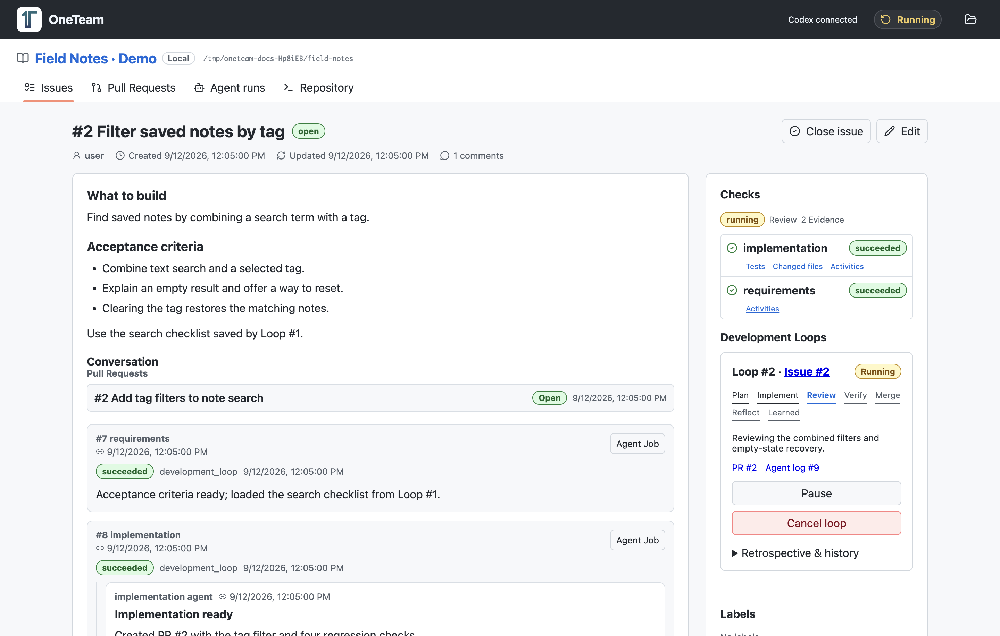
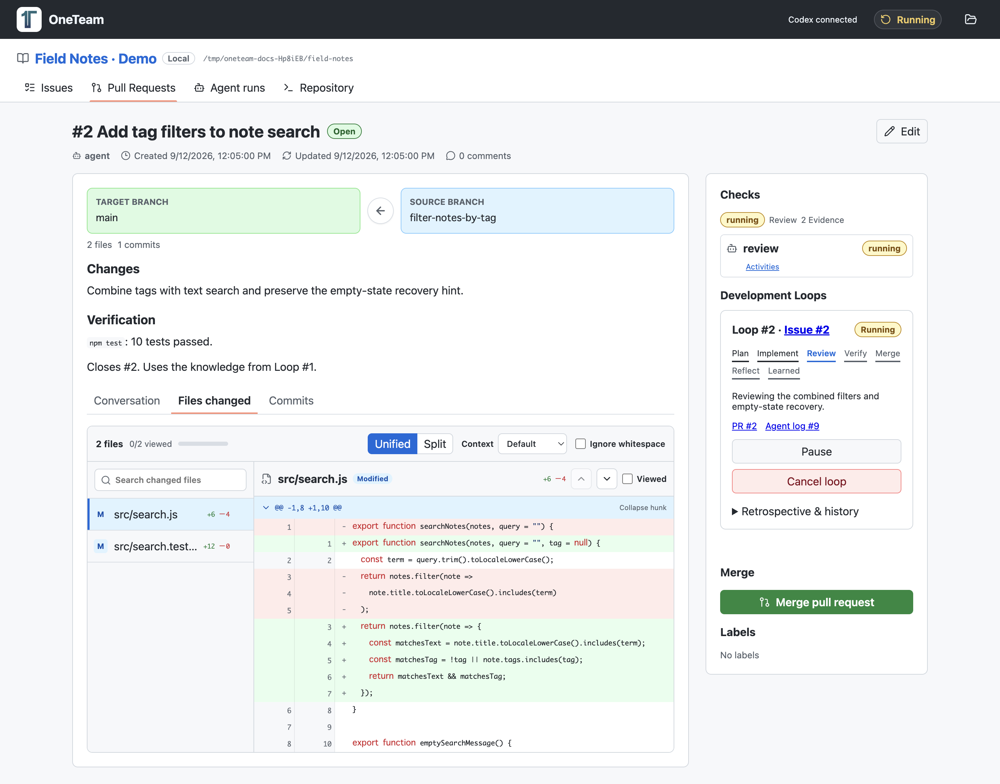
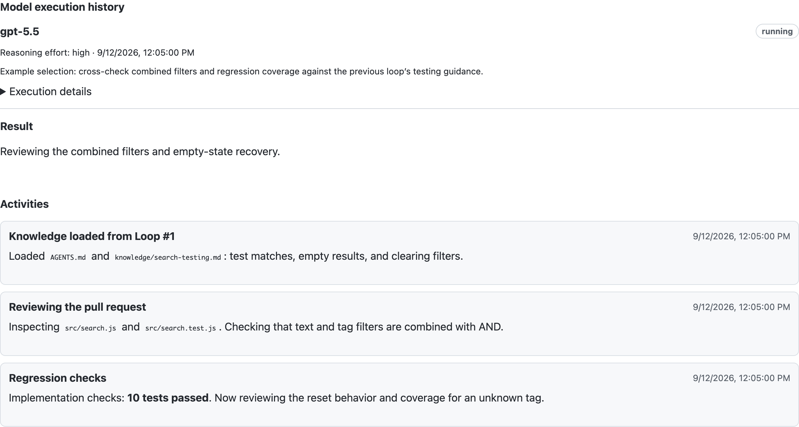
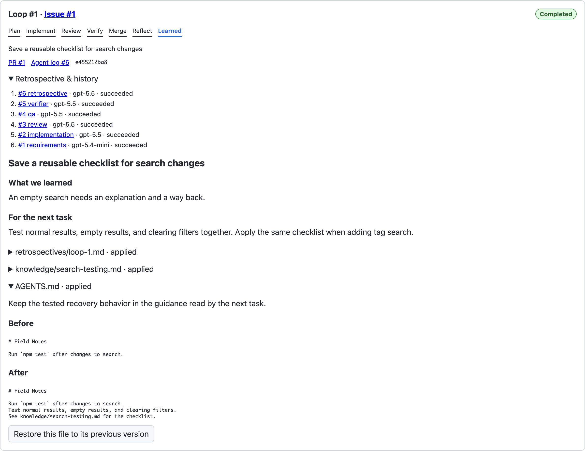

The workflow you know.
Issues, PRs, comments, file diffs, and line reviews. Your code and its development history stay together in a local workspace.
IssuesPull RequestsAgentRepository
LOCAL LOOP ENGINEERING · POWERED BY CODEX
Write an Issue. Codex takes it through implementation, review, and merge. Then OneTeam turns the retrospective into knowledge your next task can use.
Your code moves forward. Your project’s know-how comes with it.
.oneteam/knowledge/testing.md
Test the empty state and the action that resets a search.
One developer.
A growing body of know-how.
Decisions, fixes, and useful checks often disappear into yesterday’s conversation. OneTeam gives them a home in your repository, ready for the next piece of work.
INSIDE ONETEAM
Follow a tag-search improvement in the sample notebook app, Field Notes. See the current work alongside the lessons saved by an earlier loop.
Acceptance criteria, implementation results, the linked PR, and a loop currently in review.

Browse the search implementation and its tests in the real Git diff viewer.

The execution history and activity section shows the model selection reason, loaded knowledge, and review in progress.

The completed empty-search improvement updated AGENTS.md. Its testing guidance is now used by the tag-search task.

Captured from the actual OneTeam app with sample data. Model names, agent logs, and progress are illustrative. Agent and retrospective images show the relevant detail sections.
01 / THE DEVELOPMENT LOOP
Issue → PR → merge → retrospective. OneTeam treats the whole journey as one loop, completed when the learning is saved.
Write what you want to change and how you’ll know it works. Codex clarifies the requirements and starts the task.
Codex implements on a branch, opens a PR, and works through reviews, fixes, and tests. Follow the diff and execution logs.
When review and verification pass, OneTeam merges automatically. Questions or failed checks stop the loop with a reason.
Codex reflects on the work and updates useful guidance under .oneteam/. The next Issue receives that knowledge.
One loop at a time. The next task starts after the previous loop’s learning is saved.
02 / KNOWLEDGE THAT STAYS
What worked? What caused a retry? Which check caught the bug? The retrospective turns those answers into practical guidance for your repository.
OneTeam creates, edits, and organizes Markdown files. Each new task reads shared guidance and relevant details, with the version it used recorded in its log.
See what’s happening at every step− Check that search results render.
+ Test normal results, empty results, and the reset action.
Available to the next task, in plain Markdown.
03 / FAMILIAR WORKFLOW. VISIBLE PROGRESS.
Work through Issues and Pull Requests. See what Codex is doing, which model ran, and what changed along the way.
Issues, PRs, comments, file diffs, and line reviews. Your code and its development history stay together in a local workspace.
OneTeam chooses from available Codex models based on the scope, risk, and previous attempts. Small edits and difficult design work get different treatment.
The Agent tab records the model used, selection reason, commands, and test results. Pause, resume, or cancel a loop as needed.
Knowledge updates are visible too. Inspect the retrospective and before/after versions, and restore an earlier version when the file has not since changed.
YOUR NEXT ISSUE IS A GOOD PLACE TO START
Get the macOS release from GitHub Releases. Open the download, move OneTeam.app to Applications, and launch it.
Choose or drop a folder. If .oneteam is missing, OneTeam initializes it. A new workspace starts with an empty Issue list.
Describe one change you’d like to make. Sign in to Codex if prompted, then follow the loop’s progress.
The desktop app includes the Codex CLI. Install OneTeam.app and get started without building OneTeam from source.
Download on GitHub ReleasesRequires macOS, Git, a Codex login, and the tools needed to build and test your project. Open a Git repository that already has its first commit.
Read the setup guideA FEW THINGS TO KNOW
No. OneTeam uses a Git repository on your computer. Issues and Pull Requests are managed locally; they are not automatically synced to GitHub.
Your Issues, PRs, logs, and knowledge are stored locally. AI tasks run through Codex and require a connection and a Codex login.
No. Codex is the execution engine, and OneTeam selects an available model for each task. The Agent log shows the model actually used and why it was selected. Availability depends on your Codex account.
The loop stops with its reason recorded. Answer questions in the Issue or PR, or resolve the problem and resume. You can also pause or cancel a loop. Later Issues wait for the active loop to finish or be canceled.
Yes. Shared guidance lives in .oneteam/AGENTS.md and reusable details in .oneteam/knowledge/. They are plain Markdown. Updates include a change history, and conflicting edits stop application for resolution. Some retrospectives may find no new reusable lesson.